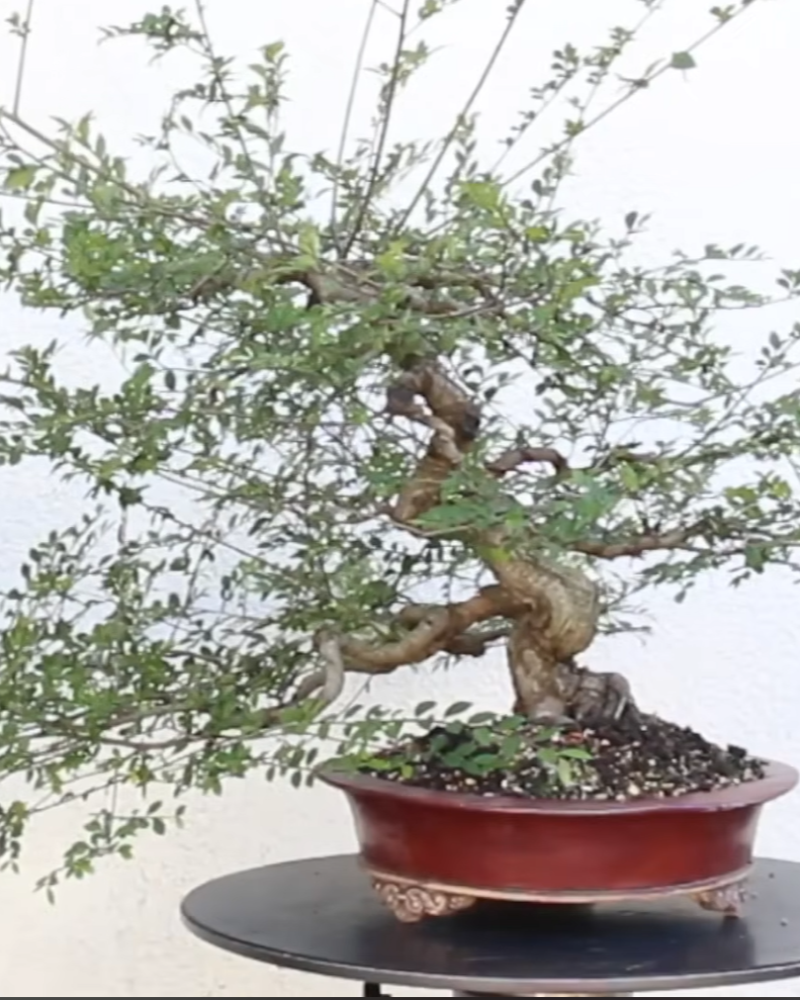
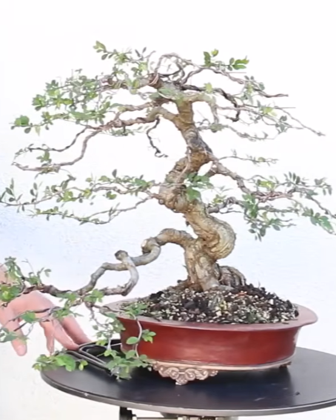
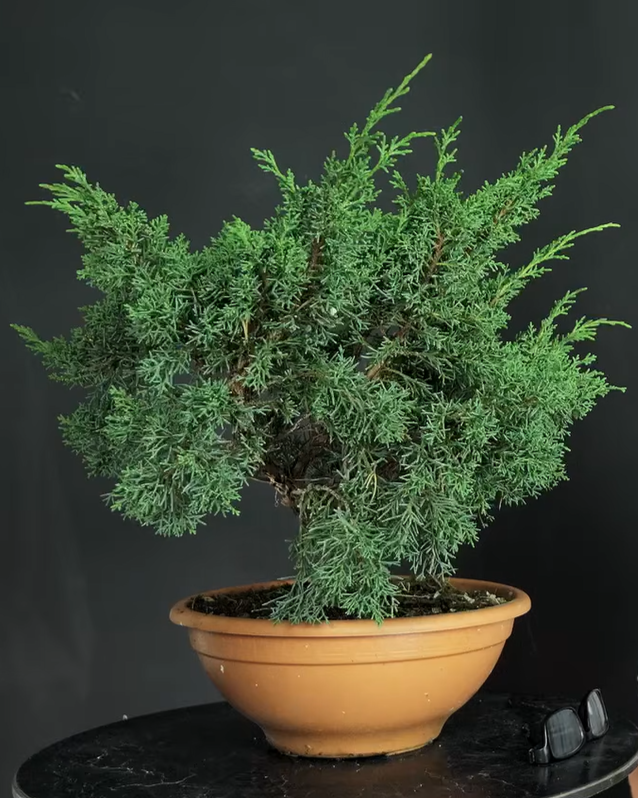
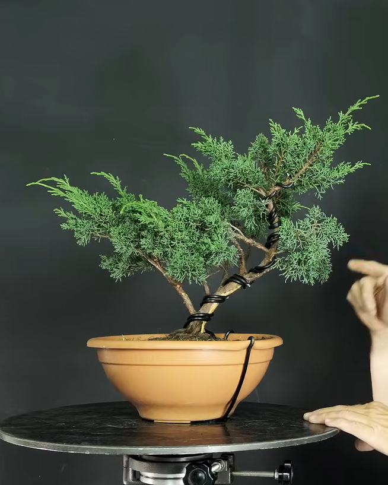
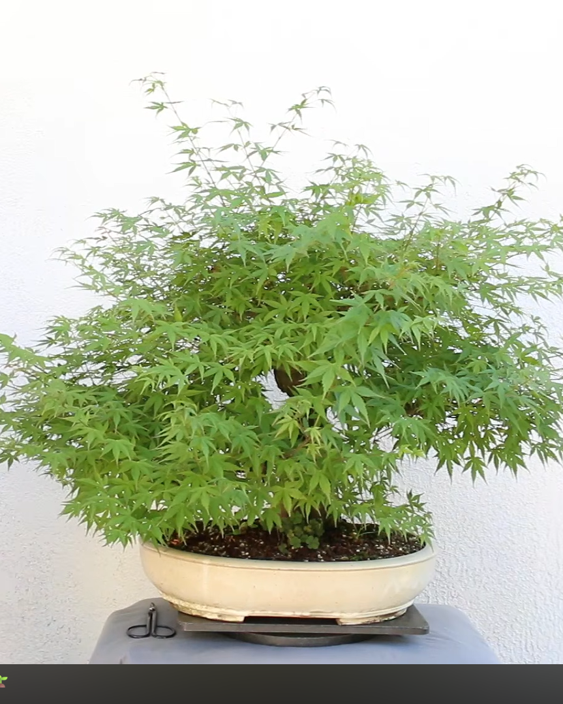
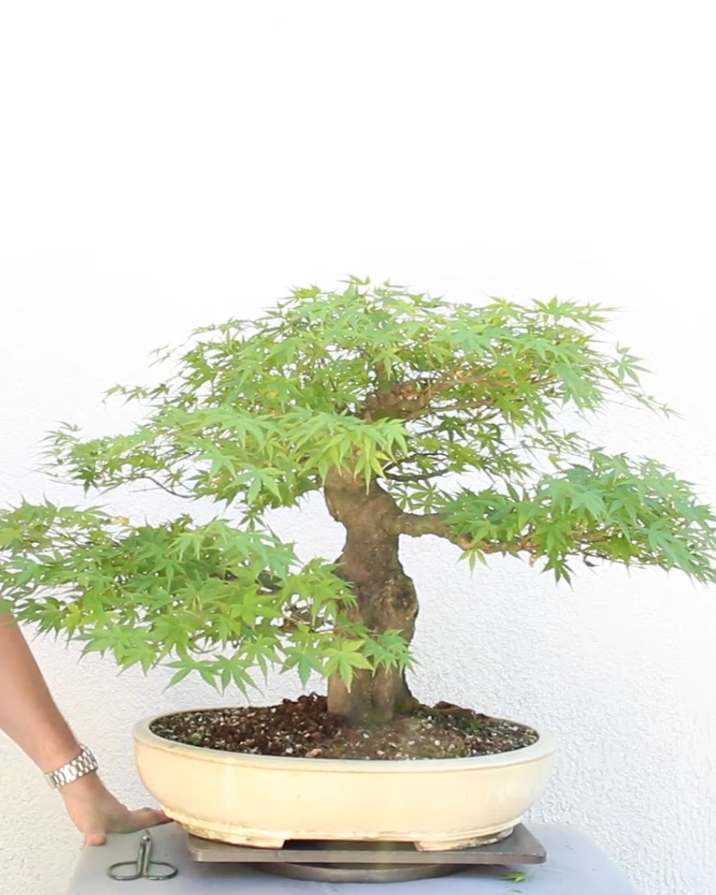
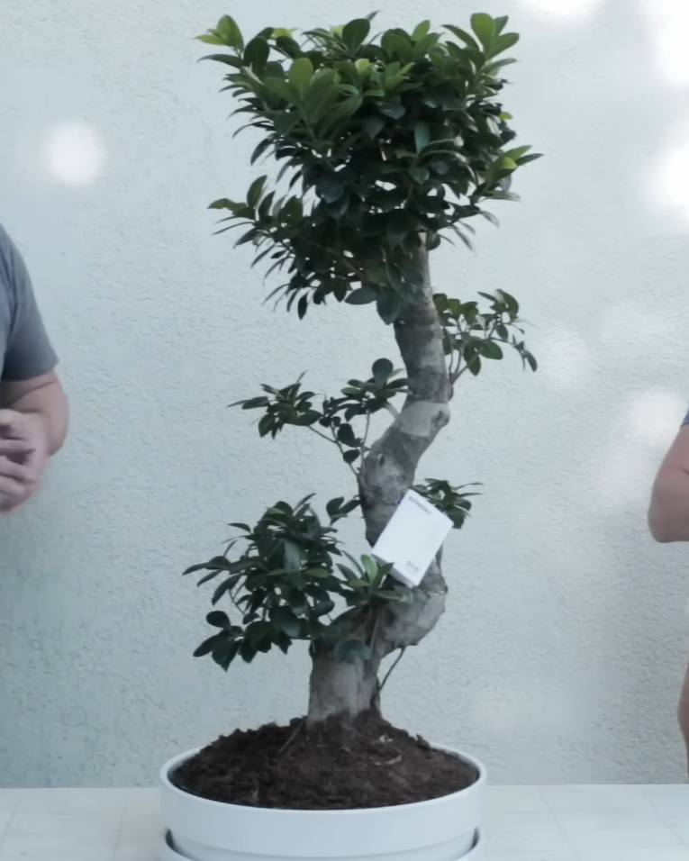
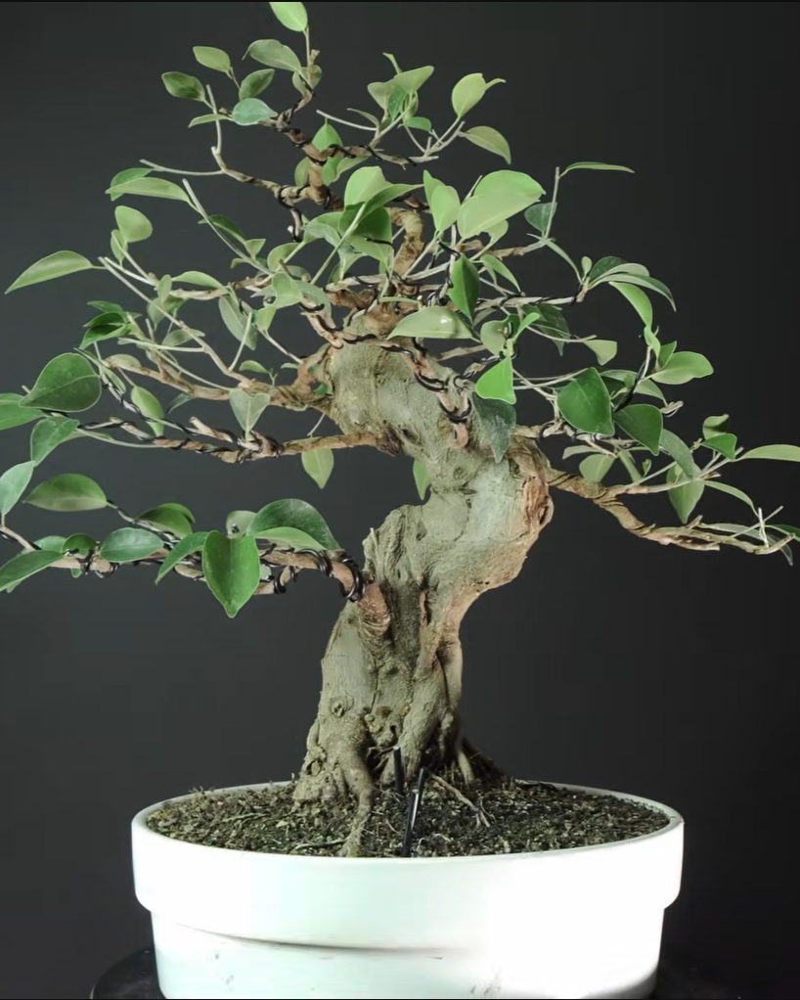

Orme de Chine, retrouver la structure
Ulmus parvifolia · entretien de printemps
Éclaircissement du feuillage, ligature des branches principales et rempotage dans un pot plus bas.
Réalisations
Chaque arbre raconte une histoire. Voici quelques-uns de ceux que nous avons accompagnés, photographiés avant et après notre intervention.


Ulmus parvifolia · entretien de printemps
Éclaircissement du feuillage, ligature des branches principales et rempotage dans un pot plus bas.


Juniperus chinensis
Dégagement du tronc, création de coussins de feuillage et bois mis en valeur.


Acer palmatum · taille d'entretien
Taille d'entretien au printemps, rabattage pour un feuillage fin et régulier.


Ficus microcarpa · 4 ans entre les deux photos
Transformation d'un ficus IKEA en vrai bonsaï. Travail sur le nebari, la densification des rameaux et de son allure.
Une rencontre, un premier pas
Un premier bonsaï, un conseil ou l'envie d'apprendre : parlons de votre projet.
Prendre contact